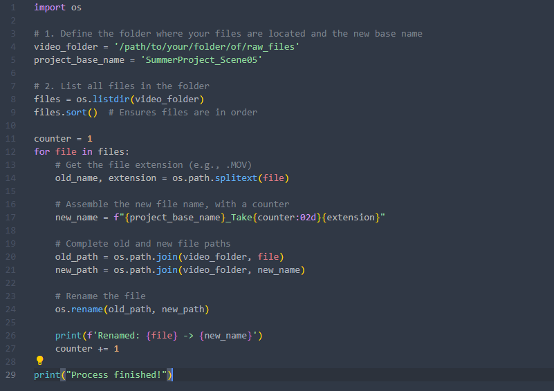

Practical Python Scripts for Video Editors
Published on June 29, 2025 • 5 min read

How many hours have you lost on repetitive tasks? Renaming dozens of video files one by one, converting clips to the correct format, organizing folders... These are essential processes, but they consume precious time that could be spent on the creative part of editing.
Coming from the world of software development, I learned a valuable lesson: if a task is manual and repetitive, it is a perfect candidate for automation. Today, I apply this mindset to my audiovisual work.
In this article, I will show two practical examples of how I use simple Python scripts to automate common tasks, freeing up more time to focus on what really matters: telling good stories.
1. Batch Renaming Files
Imagine you've just received the footage from a day's shoot. You have 50 files with generic names like C0001.MOV, C0002.MOV, C0003.MOV. Before you start editing, it's ideal to rename them to an organized standard, like ProjectSummer_Scene05_Take01.MOV.
import os
# 1. Define the folder where your files are and the new base name
video_folder = '/path/to/your/raw/footage/folder'
project_base_name = 'ProjectSummer_Scene05'
# 2. List all files in the folder
files = os.listdir(video_folder)
files.sort() # Ensures the files are in order
counter = 1
for file in files:
# Gets the file extension (e.g., .MOV)
old_name, extension = os.path.splitext(file)
# Assembles the new filename, with a counter
new_name = f"{project_base_name}_Take{counter:02d}{extension}"
# Full path of the old and new file
old_path = os.path.join(video_folder, file)
new_path = os.path.join(video_folder, new_name)
# Renames the file
os.rename(old_path, new_path)
print(f'Renamed: {file} -> {new_name}')
counter += 1
print("Process finished!")
The script uses Python's os library to interact with the file system. It lists all the files in the folder, and then, one by one (for file in files), it assembles the new name and uses the os.rename() function to work its magic.
2. Converting Video Formats
Another common task is format conversion. Perhaps you've received files in .MOV that are very large, and you need to convert them to .MP4 for smoother editing or for web publishing.
For this task, we use the industry standard for video manipulation: FFmpeg. FFmpeg is a command-line program, and our Python script will automate the process of calling it for each of our videos.
To use this script, you need FFmpeg installed on your computer and the Python library, which can be installed with a simple command in your terminal: pip install ffmpeg-python
import os
import ffmpeg
# Folder where the videos to be converted are located
video_folder = '/path/to/your/folder'
# Loop to find all .MOV files in the folder
for file in os.listdir(video_folder):
if file.endswith('.MOV'):
# Full path of the input file
input_path = os.path.join(video_folder, file)
# Creates the output filename by changing the extension to .mp4
output_name = os.path.splitext(file)[0] + '.mp4'
output_path = os.path.join(video_folder, output_name)
print(f'Converting {file} to {output_name}...')
try:
# Uses the ffmpeg library to create the conversion command
ffmpeg.input(input_path).output(output_path, vcodec='libx264').run()
print(f'Conversion of {file} complete!')
except ffmpeg.Error as e:
print('An error occurred:', e.stderr)
print("Conversion process finished!")
This script searches for all files that end with .MOV. For each one, it uses the ffmpeg library to create and execute the conversion command to the .MP4 format with the libx264 codec, which is great for the web.
Conclusion
As we've seen, with just a few lines of code, we can transform hours of tedious manual work into a process of a few seconds.
The true beauty of this isn't just the automation itself, but the change in mindset. It's about seeing bottlenecks in the workflow and using logic to create efficient solutions, freeing up our most precious asset: time for creativity.